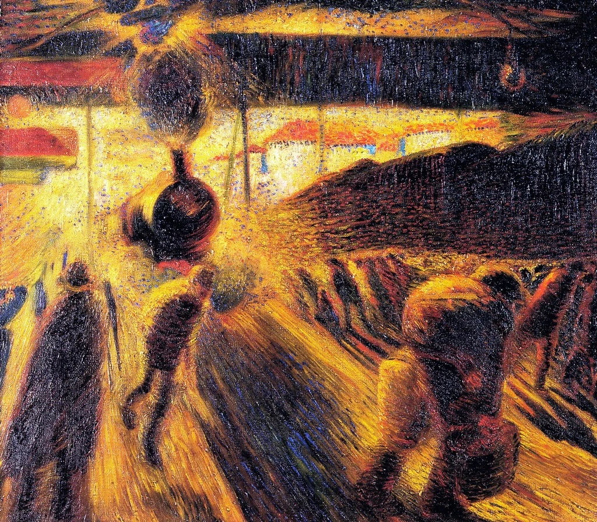
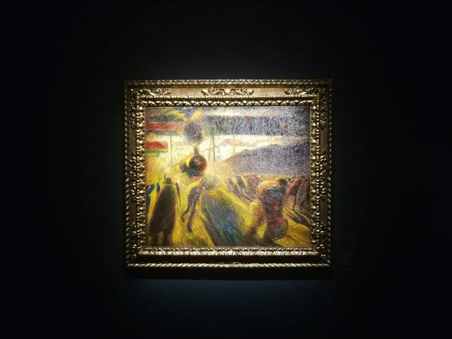

Carlo Carrà • 1911 • Galleria di stato, Stoccarda
Torna alla homeLa stazione di Milano, 1911, dove la struttura dello spazio diventa più frammentata. L'artista rappresenta un aspetto della vita cittadina attraverso il coinvolgimento nello spazio atmosferico delle tensioni dinamiche.
 Stazione di Milano esposto alla Galleria id Stato di Stoccarda.I colori scuri, ravvivati da poche macchie luminose, tendono a fondersi in una visione unica, dove la rappresentazione del dinamismo si muove secondo uno schema di forze centrifughe.
 Stazione di Milano esposto alla Galleria id Stato di Stoccarda. Torna all'artista